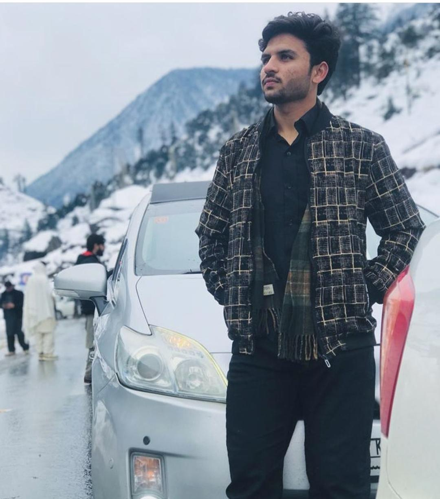

Photo Galleries
Home
Travel Stories
Destination Guides
Photo Galleries
Contact
Tour to Kalam

🏛️✈️ I embarked on a remarkable journey to Kalam in Swat, a place of serene beauty and breathtaking landscapes. During my visit, I explored the enchanting realms of Malam Jabba, a hill station known for its lush forests and adventure sports. I also ventured to Mahodand, a pristine lake surrounded by majestic mountains, where nature's tranquility embraced me. The journey led me to the mesmerizing 'White Place,' a destination of pure serenity that left an indelible mark on my heart."